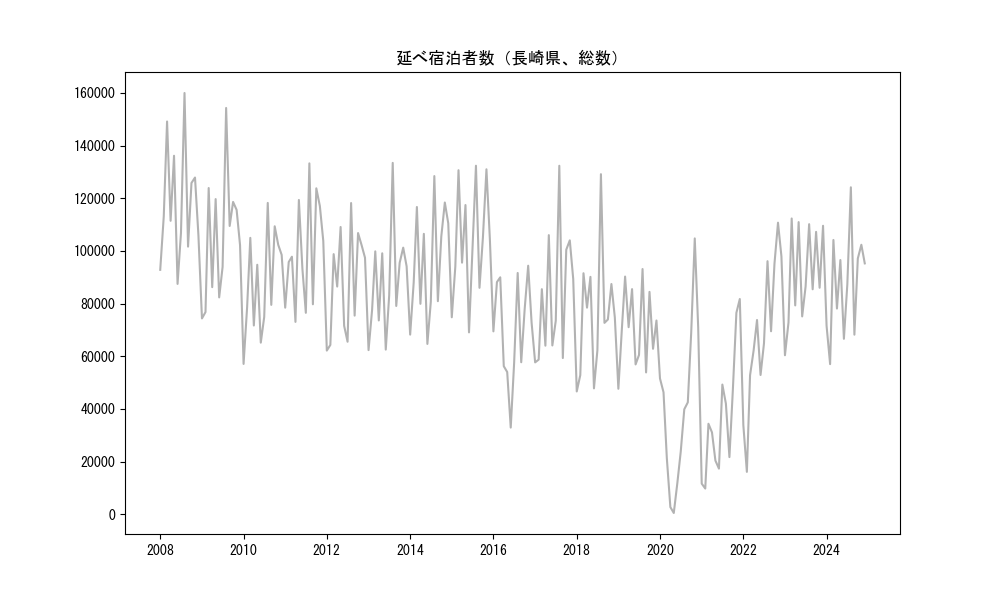
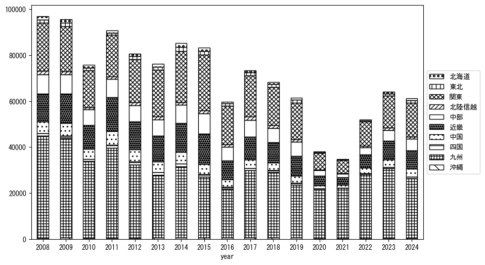
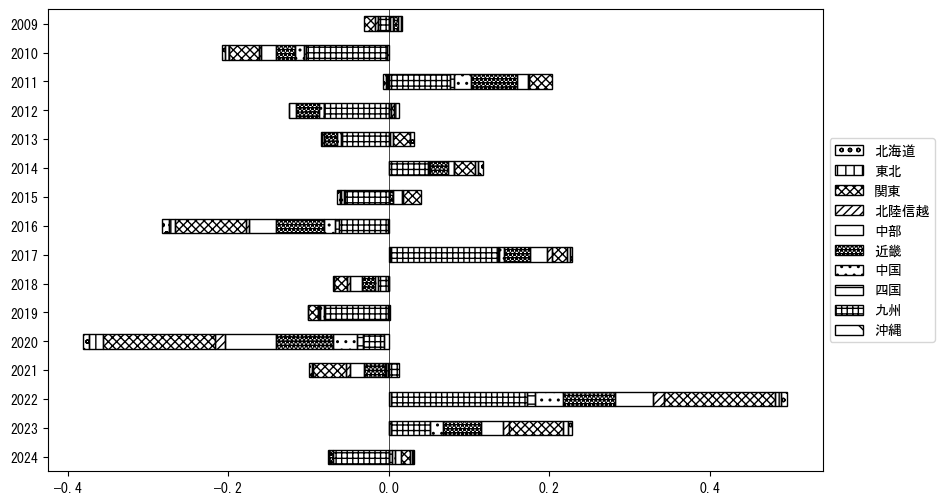
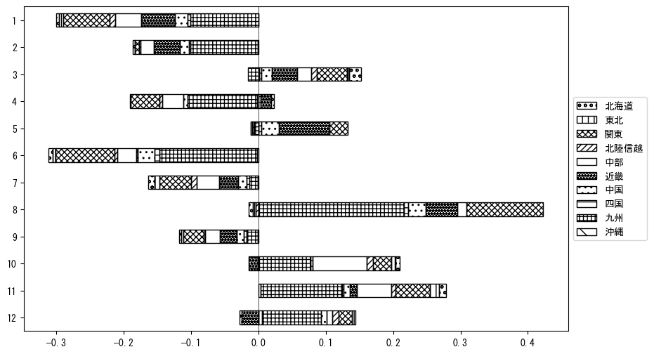

-
トップ
-
長崎県
長崎県
１．延べ宿泊者（総数）の推移
時系列グラフ

図１：長崎県内の従業員数100人以上の宿泊施設での延べ宿泊者数（国外、居住地不詳を含む総数）。
基本統計量
表１：従業員数100人以上の宿泊施設での延べ宿泊者の総数（国外、および居住地不詳を含む）に関する基本統計量。単位は人泊。平均は１か月あたりの平均値を表す。図１に対応。
| 2008年 |
118,200 |
22,140 |
87,482 (6月) |
159,995 (8月) |
| 2009年 |
104,800 |
23,452 |
74,378 (1月) |
154,313 (8月) |
| 2010年 |
87,938 |
19,291 |
57,091 (1月) |
118,248 (8月) |
| 2011年 |
99,322 |
20,381 |
73,058 (4月) |
133,271 (8月) |
| 2012年 |
88,170 |
19,731 |
62,162 (1月) |
118,206 (8月) |
| 2013年 |
88,471 |
19,824 |
62,339 (1月) |
133,453 (8月) |
| 2014年 |
95,713 |
21,166 |
64,687 (6月) |
128,444 (8月) |
| 2015年 |
103,426 |
21,326 |
69,076 (6月) |
132,376 (8月) |
| 2016年 |
70,232 |
19,032 |
32,918 (6月) |
94,400 (11月) |
| 2017年 |
82,927 |
24,042 |
57,683 (1月) |
132,360 (8月) |
| 2018年 |
75,641 |
22,967 |
46,643 (1月) |
129,162 (8月) |
| 2019年 |
70,865 |
14,998 |
47,658 (1月) |
93,143 (8月) |
| 2020年 |
40,440 |
30,963 |
476 (5月) |
104,766 (11月) |
| 2021年 |
36,916 |
23,676 |
9,763 (2月) |
81,747 (12月) |
| 2022年 |
68,827 |
28,025 |
16,098 (2月) |
110,742 (11月) |
| 2023年 |
91,329 |
17,992 |
60,389 (1月) |
112,340 (3月) |
２．宿泊者数の重心（年平均の推移）
図２：長崎県内の従業員数100人以上の宿泊施設での宿泊者数（国外、居住地不詳を除く）の重心（年平均の推移）。
全画面表示
重心の前年平均からの移動距離と方位、および緯度・経度
表２：重心の前年平均からの移動距離と方位、および緯度・経度。図２に対応。
| 2008年 |
— |
— |
34.3881 |
134.0873 |
| 2009年 |
西 |
1.0km |
34.3869 |
134.0762 |
| 2010年 |
東 |
9.2km |
34.3965 |
134.1758 |
| 2011年 |
南西 |
11.5km |
34.3357 |
134.0742 |
| 2012年 |
東北東 |
36.8km |
34.4674 |
134.4411 |
| 2013年 |
東北東 |
37.2km |
34.5941 |
134.8158 |
| 2014年 |
北北東 |
4.3km |
34.6313 |
134.8285 |
| 2015年 |
東北東 |
36.7km |
34.7163 |
135.2158 |
| 2016年 |
西南西 |
32.0km |
34.5936 |
134.8999 |
| 2017年 |
西南西 |
32.2km |
34.4991 |
134.5684 |
| 2018年 |
西南西 |
9.2km |
34.4677 |
134.4751 |
| 2019年 |
東北東 |
24.0km |
34.5455 |
134.7189 |
| 2020年 |
西南西 |
153.5km |
34.0039 |
133.1854 |
| 2021年 |
西南西 |
37.0km |
33.9247 |
132.7966 |
| 2022年 |
東北東 |
66.9km |
34.1558 |
133.4653 |
| 2023年 |
東北東 |
52.3km |
34.3476 |
133.9844 |
運輸局別延べ宿泊者数
時系列（年平均）

図３：長崎県内の従業員数100人以上の宿泊施設での１か月あたり平均宿泊者数（国外、居住地不詳を除く）の運輸局別内訳。
寄与度（前年からの変化率に対する）

図４：長崎県内の従業員数100人以上の宿泊施設での運輸局別宿泊者数（国外、居住地不詳を除く）から求めた寄与度。
３．宿泊者数の重心（月別）
図５：長崎県内の従業員数100人以上の宿泊施設での宿泊者数（国外、居住地不詳を除く）の重心（月別）。観測期間は2008年1月から2023年12月まで。
全画面表示
全期間（2008年1月～2023年12月）の平均と月別平均の比較
表３：全期間の平均から月別平均までの移動距離と方位、および緯度・経度。図５に対応。
| 全期間 |
— |
— |
34.4034 |
134.2380 |
| 1月 |
西南西 |
24.7km |
34.3178 |
133.9905 |
| 2月 |
東北東 |
32.0km |
34.5032 |
134.5644 |
| 3月 |
東北東 |
50.9km |
34.6477 |
134.7072 |
| 4月 |
北東 |
21.9km |
34.5222 |
134.4284 |
| 5月 |
東 |
12.5km |
34.3946 |
134.3740 |
| 6月 |
西南西 |
10.8km |
34.3518 |
134.1389 |
| 7月 |
西南西 |
53.2km |
34.1677 |
133.7353 |
| 8月 |
南西 |
24.9km |
34.2733 |
134.0176 |
| 9月 |
西南西 |
21.3km |
34.3338 |
134.0223 |
| 10月 |
北東 |
13.3km |
34.4823 |
134.3467 |
| 11月 |
東北東 |
16.6km |
34.4842 |
134.3894 |
| 12月 |
西南西 |
10.0km |
34.3623 |
134.1417 |
運輸局別延べ宿泊者数
月別平均（2008年1月～2023年12月）
 図６：長崎県内の従業員数100人以上の宿泊施設での宿泊者数（国外、居住地不詳を除く）の運輸局別内訳（月別）。
図６：長崎県内の従業員数100人以上の宿泊施設での宿泊者数（国外、居住地不詳を除く）の運輸局別内訳（月別）。
寄与度（全期間の平均から月別平均への変化率に対する）

図７：長崎県内の従業員数100人以上の宿泊施設での運輸局別宿泊者数（国外、居住地不詳を除く）から求めた寄与度（月別）。
４．データのダウンロード
出典：観光庁「宿泊旅行統計調査」に収録された「施設所在地、居住地別延べ宿泊者数（従業員数100人以上の施設）」
国土地理院「白地図（地理院タイル）」（図２と図５）